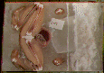
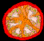
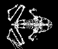

For live frog lovers .... Sounds of North American Frogs (a CD from Smithsonian Folkways).
The DSD "Whole Frog" project is intended to introduce the concepts of modern, computer based 3D visualization, and at the same time to demonstrate the power of whole body, 3D imaging of anatomy as a curriculum tool. The goal of the Whole Frog Project is to provide high school biology classes the ability to explore the anatomy of a frog by using data from high resolution MRI imaging and from mechanical sectioning, together with 3D surface and volume rendering software to visualize the anatomical structures of the intact animal. Ultimately we intend to be able to "enter the heart and fly down blood vessels, poking our head out at any point to see the structure of the surrounding anatomy". A summary of this may be found in: LBL "Whole Frog" Project Summary.
The secondary goal of this project is to introduce the concepts of modeling and displaying 3D structures directly from 3D images obtained, for example, from MRI imaging (biological specimens), X-ray CT imaging (industrial imaging of non-biological objects), and direct generation from mathematical descriptions. This approach is being developed in conjunction with summer programs involving high school teachers and students. For more information see Geometric Analysis, Visualization, and Conceptualization of 3D Image Data .
For a variety of technical reasons relating to differences between mammalian and amphibian physiology, the resolution of MRI images of a frog were not good enough to clearly separate internal structures. A high resolution data set was obtained by a mechanical sectioning technique that gave sufficient resolution to see detail down to the level of large nerves. Examples of mechanical slice data: 
For a report on the mechanical sectioning and associated data collection issues, please see Whole Frog Technical Report.
High resolution MRI studies of several plants were done as part of this project, with an orange forming the basis of the 3D reconstruction study unit. Images of reconstructed tomato: 
Examples of frog reconstructions: 
Example 2 of frog reconstruction. (TIF file)
Example 3 of frog reconstruction. (TIF file)
The following are two different encodings of the same sequence.
MPEG movie of frog rotating (769 KBytes)
Quicktime (JPEG compressed) movie of frog rotating (1,862 KBytes)
Two kinds of data are used in the 3D reconstructions: slice images (example slice), and masks (example mask). Slice images are a sequence of sections through the object of interest. These slices may be obtained directly as in mechanical slicing, or by tomographic reconstruction. The masks are a geometric representation of objects of interest and are obtained by "segmentation" of the images. (This can be done manually, or using image processing techniques.)
The following describes how to get all of the data that went into the images and reconstructions illustrated in this document.
The "data" behind the 3D models (e.g. of the frog) are images of slices through the original object, and "masks" that define various regions of interest (anatomical systems, in the case of the frog).
The slice image data are in two different formats: "raw" (no header) monochrome images with a file format: each pixel is an unsigned byte, and the scan lines are stored row-wise. For each data set there is a file called *.hd that describes the number and size of the images. The slice image files contain all slices for a given organism. For example, the frog slice image data set is 470 x 500 x 1Byte x 136 images. So each 500 bytes from this dataset represents one scan line of the slice image.
rawtopgm 256 256 < tomato.data > frame1
rawtopgm 256 1024 < tomato.data >frame1-4
rawtopgm -headerskip 65536 256 256 < tomato.data > frame2
rawtopgm -headerskip 131072 256 256 < tomato.data > frame3
This is the original data obtained by cryotome slicing of the frog. The slices are available both for individual viewing in TIFF format, using the TIFF LZW compression option (approximately 900K apiece), and in bulk as a zip file (~120 Mbytes).
The orange, tomato, pumpkin, and rat data are only available as MRI - the rat dataset is not high quality.
The MRI data corresponding to the section data for the frog is also not of very high quality. (The speculation is that iron pigments in the frog's skin interfere with the MRI.)
Many of the MRI images (as the tomato is) may require normalization or histogram equalization in order to "see" much in an image displayed on the screen. For example:
rawtopgm 256 1024 < tomato.data | pgmnorm | your_favorite_display_program
The masks are available as animated GIF's suitable for viewing, and as multi-page TIFF files suitable for downloading. The TIFF files were created with the TIFF option to LZW compress the mask data.
Some Sun rasterfile screen dumps of 3D reconstructions done by raycasting
are stored in "*.IMAGES.tar" under the
links
given above.
This work was done at Lawrence Berkeley National Laboratory in 1993-1995, and was sponsored at that time by the U. S. Dept. of Energy, Energy Research Division, Mathematical, Information, and Computational Sciences Division, John Cavallini program manager.
Lawrence Berkeley National Laboratory is operated by the University of California for DOE under contract DE-AC03-76SF00098 .
Thanks to the many people that made this project possible:
|
Page last modified: 03/25/19 Contacts: Bill Johnston, David Robertson |
{kind=link}
{kind=link}
{kind=link}
{kind=link}
{kind=link}
{kind=link}
{kind=link}
{kind=link}